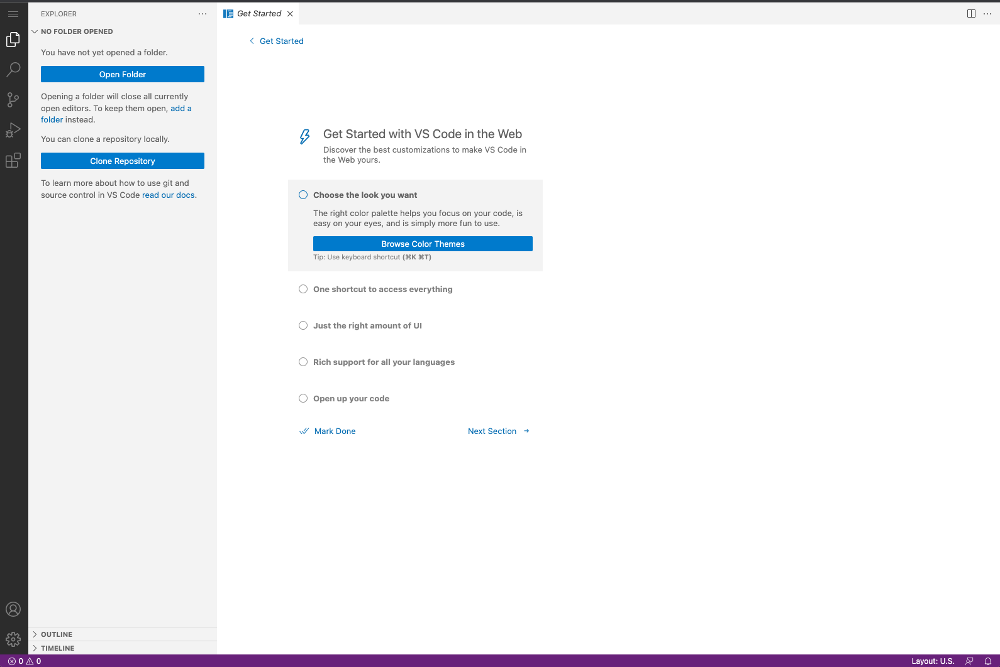

VS Code Online
Your workshop will provide you an online Visual Studio Code instance. When you first login you should see an image similar to below.
 If your left navigation is not open click on this iconYou will first need to clone the workshop repository.
- Click clone repository
- Enter https://github.com/chef-cft/Habitat-workshop.git and press enter
- Choose the home directory